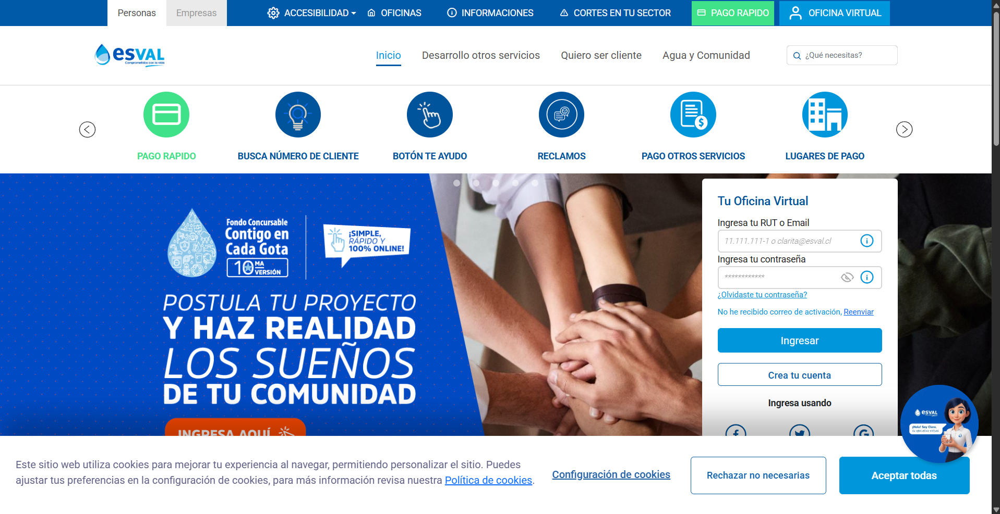
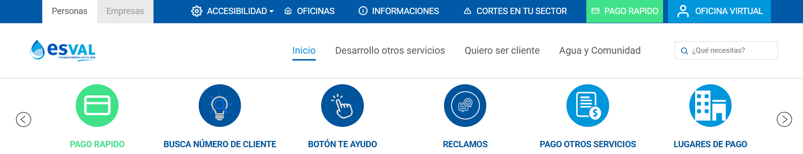
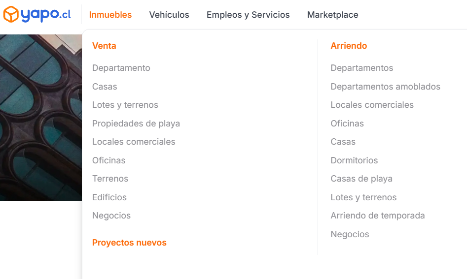
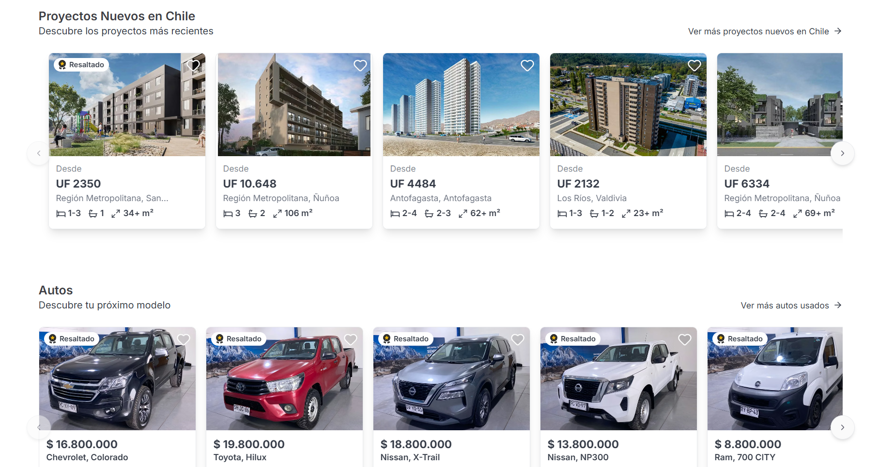

Esval
El portal de Esval se presenta como un sitio web corporativo enfocado principalmente en la autogestión del cliente y el servicio público de agua potable en la Región de Valparaíso. La interfaz adopta un tono institucional basado en tonos azules y blancos, minimizando las distracciones para que el usuario realice trámites urgentes en pocos pasos.

El propósito central de la plataforma es resolver las necesidades del cliente sanitario sin requerir asistencia presencial para tareas básicas. Entre las funcionalidades destacan el pago exprés mediante número de cliente o RUT, la consulta de cortes de agua programados o de emergencia por comuna, el ingreso de lecturas del medidor y la revisión del estado de boletas.
Se sitúa en el nivel más alto las operaciones frecuentes del usuario común y relega la información corporativa a niveles secundarios. En la barra superior principal se distinguen pestañas estructuradas como "Pago rápido", "Boleta electrónica" y "Busca número de cliente".
El sitio combina elementos estáticos (formularios de consulta, tarjetas de información legal) y piezas dinámicas como el carrusel de noticias, mapas interactivos de zonas de corte, y un widget de asistencia en línea.

Ciertos flujos redirigen fuera de los entornos seguros dedicados. Al presionar en el pago de cuentas, la plataforma redirige a pasarelas bancarias externas (como Transbank o Servipag).
Yapo.cl
Yapo.cl es el portal de avisos clasificados y comercio electrónico entre particulares (C2C) y empresas (B2C) más grande de Chile. Su propósito central es conectar a compradores y vendedores de todo el país a través de una interfaz ágil e intuitiva, facilitando la transacción de bienes inmuebles, vehículos, productos de consumo general, servicios y ofertas laborales.

Esta plataforma se conecta con servicios de terceros para completar transacciones comerciales o publicitarias.
La página utiliza componentes interactivos y en movimiento para provocar anuncios e incentivar la interacción.
Carrusel de Anuncios, una barra horizontal deslizable situada en la zona superior o media. Muestra una secuencia de publicaciones destacadas por vendedores pagados (como autos o propiedades).
Tarjetas de Anuncios en la Grilla, cada recuadro de la lista principal tiene interacción al pasar el cursor por encima.
